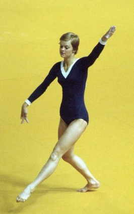

Ans Dekker (NED)
1972 and 1976 Olympian

Ans was born on March 1, 1955.
Competition
Results
1970
NED-POL Dual Meet: 2nd Team, 12th AA
1971
European Championships: 21st AA
1972
Blume Memorial: 4th AA
Dutch Championships: 1st AA
GBR-NED Dual Meet: 1st Team, 3rd AA
NED-HUN Dual Meet: 2nd Team, 8th AA
NED-ROM Dual Meet: 2nd Team, 7th AA
Olympic Games: 9th Team, 68th AA (prelims)
SWE-NED Dual Meet: 1st Team, 5th AA
1973
Blume Memorial: 5th AA
Dutch Championships: 1st AA
NED-BEL Dual Meet: 1st Team, 3rd AA
NED-ITA Dual Meet: 2nd Team, 5th AA
1974
Blume Memorial: 5th AA
Dutch Championships: 1st AA, 1st V, 1st B, 1st FX, 2nd UB
Hungarian International: 17th AA
ITA-NED Dual Meet: 2nd Team, 7th AA
NED-HUN Dual Meet: 2nd Team, 3rd AA
NED-ROM Dual Meet: 2nd Team, 2nd AA
World Championships: 12th Team
1975
Dutch Championships: 2nd AA, 1st B, 2nd V, 2nd UB, 2nd FX
NED-RSA: 1st Team, 3rd AA
1976
NED-HUN Dual Meet: 2nd Team, 3rd AA
Olympic Games: 11th Team, 63rd AA (prelims)
ROM-NED Dual Meet: 2nd Team, 10th AA
1977
Dutch Championships: 10th AA
European Championships: 35th AA
This page was created on August 13, 2020.
© Gymn Forum